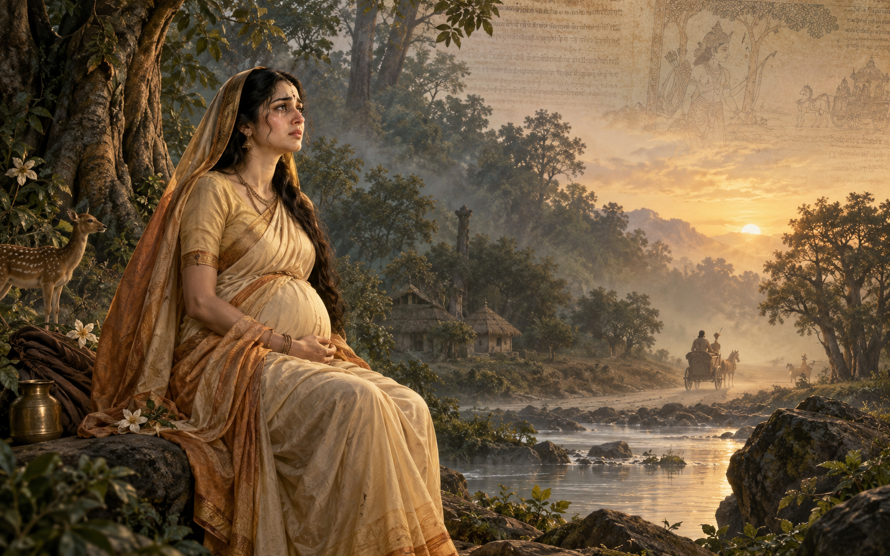

Investigation 01
Did Vālmīki's Story End Before Sita's Exile?
What most people know
"Rama banished pregnant Sita because a washerman questioned her purity."
What the manuscript investigates
The entire exile narrative belongs to the Uttara Kanda — a section whose manuscript history, linguistic style, and thematic consistency have been questioned by scholars for over a century.